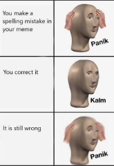

|
The Evolution of Language People all over the world communicate through a universal language. Otherwise, miscommunication and disconnectedness may ensue. With the so-called online communication, a new language has evolved to suit this type of communication. A new digital dialogue now uses acronyms to save time and to make it easier to type on smartphone and tablet keyboards.
Spell Check: Blessing or Curse?
 Unfortunately, people have become so used in applying short forms of words and abbreviations when communicating through a smartphone, thereby negating the use of proper spelling and grammar. Spelling accuracy is also affected by the speed by which a recipient expects a response, otherwise, an interest in conversation may be lost. If proper spelling is not practiced, the skill is reduced. |
|
Emoticons American philosopher George Herbert Mead’s understanding of the self shows the importance of socialization and the priority it holds in people’s lives. He believed that the mind plays an important role in the interpretation and processing of social information.
|